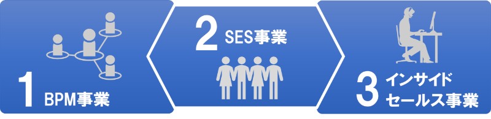

Business
事業内容
アースリンクの事業を紹介！
事業内容の紹介
アースリンクでは、企業向けの業務システムを
「業務効率化のBPM事業」「技術支援のSES事業」「新規開拓のインサイドセールス事業」
の３つの成長領域で支援しています。
BPM事業
BPMとは「Business Process Management」の頭文字で、ここ数年で急激に成長している
業務管理システムの一つになります。
企業は、規模が大きくなればなるほど業務プロセスが複雑になり非効率になっていきます。
アースリンクでは、このようなお客様の課題を解決するために、ITを使った業務プロセスの効率化支援事業を20年以上おこなっています。
製造業向けBPM
製造業向けBPM
製造業向けBPM
製造業向けBPM
SES事業
大規模なプロジェクトになるほど大量にシステムエンジニアが必要になってきます。
また、エンジニアの種類もSE・プログラマーの他、ネットワークやサーバーエンジニアなど
様々な人材が必要となり、大手のシステム会社でも全ての人を揃えることはできません。
アースリンクでは、
このようなお客様の課題を解決するために技術者の派遣事業を行っています。
SE
プログラマー
ネットワーク
サーバー
インサイドセールス事業
インサイドセールスとは、営業の生性向上、人材不足、新型コロナウィルス感染拡大による訪問営業の制限を背景に、企業での導入が広がっている非対面型の営業手法です。
アースリンクでは、20年以上にわたる自社での取り組みをもとに、これから立ち上げようとしているお客様の課題を解決するため、自社開発のITツールや代行サービスを提供しています。